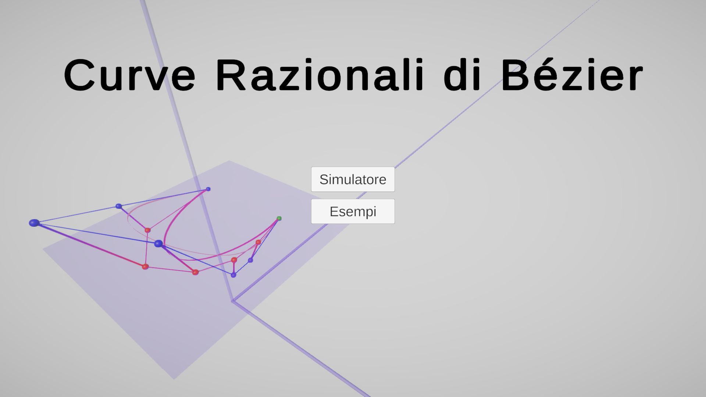

L'applicazione sviluppata permette di costruire dinamicamente curve razionali di Bézier, scegliendo le coordinate dei punti di controllo, fino a un massimo di \(10\), e il valore dei rispettivi pesi.
Appena aperta l'applicazione, nel menu principale è possibile selezionare una tra due diverse opzioni: "Simulatore" ed "Esempi". Si analizza di seguito il funzionamento di entrambe.
Selezionando l'opzione "Simulatore" dal menu prinpale è possibile accedere alla schermata in Figura 2, che permette la costruzione di curve razionali di Bézier fino al grado \(9\), scegliendo le coordinate dei punti di controllo sul piano \(U = 1\) e il valore dei rispettivi pesi.
Partendo dalla sinistra è possibile osservare lo spazio euclideo su cui vengono posizionaiti i punti di controllo e i pesi e su cui viene disegnata la curva. L'asse \(U\) punta verso l'alto, l'asse \(X\) verso l'osservatore e l'asse \(Y\) verso destra, ma tramite le frecce destra e sinistra (o i pulsanti A e D) è possibile ruotare la visuale per osservare la curva da diversi punti di vista; tramite le frecce su e giù (o i pulsanti W e S) è invece possibile aumentare o diminuire la distanza di osservazione.
Nello spazio è inoltre disegnato il piano \(U = 1\) su cui vengono posizionati i punti di controllo della curva; all'avvio dell'applicazione ve ne sono 3 predefiniti:
Questi sono collegati tra loro da una linea rossa, che delinea il poligono di controllo della curva, mentre ognuno di essi è collegato da una linea rossa e blu a un ulteriore punto, di colore blu, ottenuto moltiplicando le coordinate del punto sul piano \(U = 1\) per il rispettivo peso. Anche tali punti sono uniti da una linea, anche questa blu, che delinea il poligono di controllo di una curva di Bézier, non razionale, che ha tali punti come punti di controllo. Questa curva è rappresentata in arancione e viene utilizzata per ottenere la curva razionale formata dai punti di controllo sul piano \(U = 1\), dividendo le coordinate di ogni suo punto per la rispettiva coordinata \(U\).
Ogni punto di controllo sul piano può essere spostato trascinadolo col muose nella direzione desiderata, mentre i rispettivi punti blu possono essere modificati trascinandoli verso l'alto o verso il basso, aumentando di conseguenza il valore del peso associato. Per semplificare lo sviluppo dell'applicazione le coordinate dei punti di controllo possono essere scelte solamente all'interno del cubo di lato 2 centrato nell'origine.
Nella parte centrale della schermata, in alto, è possibile osservare una visuale del solo piano $\(xy\)$, su cui sono posizionati i punti di controllo, in rosso, e su cui è disegnata la curva razionale di Bézier da essi definita, in arancione. Anche da questa visuale trascinando un punto di controllo col mouse le sue coordinate vengono modificate di conseguenza e la forma della curva aggiornata.
Nella parte bassa della schermata, al centro, tramite uno slider è possibile scegliere un valore compreso tra 0 e 1 da assegnare al parametro t della curva. In base al suo valore vengono calcolate le coordinate dei rispettivi punti sulla curva razionale sul piano \(U = 1\) e sulla curva proiettata; tali punti vengono mostrati in verde in entrambi gli spazi \(xy\) e \(XYU\).
Sotto è inoltre possibile cliccare un pulsante "De Casteljau", che attiva o disattiva la visualizzazione dei passaggi dell'algoritmo di De Casteljau per il calcolo delle coordinate del punto per il valore di t selezionato; la Figura 3 mostra un esempio di visualizzazione dei passaggi dell'algoritmo.
Sulla destra della schermata è possibile modificare manualmente le coordinate dei punti di controllo della curva e dei rispettivi pesi, senza doverli trascinare col mouse.
Per ogni punto è presente una riga con il suo nome (una lettera dell'alfabeto, a partire dalla A) e tre campi di testo: il primo campo mostra la coordinata \(x\) del punto, il secondo la coordinata \(y\), mentre il terzo il peso ad esso associato. Tutti i tre campi sono modificabili: i primi due, ovvero quelli di \(x\) e \(y\), permettono l'inserimento di coordinate comprese nel quadrato di lato \(2\) centrato nell'origine, mentre il terzo un qualsiasi valore reale.
Nonostante solitamente si preferisca utilizzare pesi positivi per i punti di controllo delle curve razionali di Bézier l'applicazione accetta anche l'inserimento di valori negativi, per osservare come questi influenzano la forma della curva. Di particolare interesse è l'applicazione dell'algoritmo di De Casteljau in presenza di pesi negativi: i punti ottenuti nei passaggi intermedi dell'algoritmo non stanno sempre all'interno della convex hull definita dal poligono di controllo, ma terminando il processo si ottiene comunque il punto corretto sulla curva.
Sotto, sono inoltre presenti tre pulsanti:
Nell'angolo in basso a detra della schermata è presente un rettangolo in cui vengono mostrate informazioni aggiuntive su quello che si sta facendo. All'inizio viene mostrata la definizione delle curve di Bézier razionali, ma modificando la curva e interagendo con gli elementi della schermata le informazioni cambiano. In particolare:
Nell'angolo in alto a sinistra della schermata è possibile infine accedere al menu delle opzioni tramite la pressione di un pulsante con l'icona di un ingranaggio. Esso permette di disattivare o riattivare la visualizzazione del poligono di controllo della curva e della superficie di proiezione, che nello spazio \(XYU\) collega ogni punto della curva proiettata col rispettivo punto della curva razionale. Accanto al pulsante per accedere al menu delle opzioni è presente un ulteriore bottone, con l'icona di una freccia verso sinistra, che permette di ritornare al menu principale dell'applicazione.
Selezionando l'opzione "Esempi" dal menu prinpipale si accede a un ulteriore menu da cui è possibile scegliere una tra cinque opzioni:
Cliccando su una qualsiasi delle opzioni si accede a una schermata identica a quella del Simulatore, ma preconfigurata per mostrare come le curve razionali di Bézier possono essere utilizzate per disegnare il tipo di curva scelto.
Tutte le curve sono già normalizzate e le coordinate dei loro punti di controllo e i loro pesi non possono essere modificati eccetto che per le prime quattro curve, tutte di grado \(2\), che permettono la sola modifica del peso associato al punto \(B\), per osservare come esso influenza la forma della curva a seconda che sia compreso tra \(0\) e \(1\), pari a \(1\) o maggiore. In tutti i cinque esempi risulta invece possibile la modifica del valore del parametro \(t\) e l'osservazione della costruzione di De Casteljau.